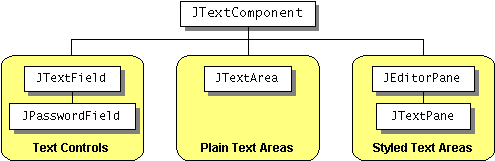
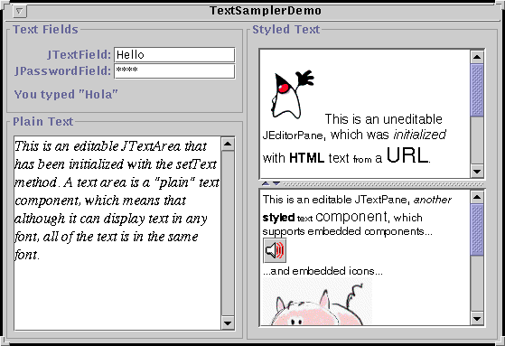

Feedback Form
|
|
Start of Tutorial > Start of Trail > Start of Lesson |
Search
Feedback Form |
This section gives you background information you might need when using Swing's text components. If you intend to use an unstyled text component — a text field, password field, formatted text field, or text area — we recommend that you go to its how-to page and return here only if necessary. If you intend to use a styled text component, then you're welcome to go to How to Use Editor Panes and Text Panes, but you'll probably need to read this section as well. If you don't know which component you need, read on.Swing's text components display text and optionally allow the user to edit the text. Programs need text components for tasks ranging from the straightforward (enter a word and press Enter) to the complex (display and edit styled text with embedded images in an Asian language).
Swing provides six text components, along with supporting classes and interfaces, that meet even the most complex text requirements. In spite of their different uses and capabilities, all of Swing's text components inherit from the same superclass,
JTextComponent, which provides a highly-configurable and powerful foundation for text manipulation.
The following figure shows the
JTextComponenthierarchy.
[PENDING: This figure will be updated to add JFormattedTextField, which is a subclass of JTextField.]The following picture shows an application called TextSamplerDemo that uses one of each of Swing's text components.
 [PENDING: This figure will be updated. A formatted text field now appears below the password field.]
Try this:
- Run TextSamplerDemo using JavaTM Web Start
. Or, to compile and run the example yourself, consult the example index.
- Type some text into the text field and press Enter. Do the same with the password field. The label beneath the fields is updated when you press Enter.
- Try entering valid and invalid dates into the formatted text field. Note that when you press Enter the label beneath is updated only if the date is valid.
- Select and edit text in the text area and the text pane. Use special keyboard keys to cut, copy, and paste text. [PENDING: more detail?]
- Try to edit the text in the editor pane, which has been made uneditable with a call to
setEditable.- Look in the text pane to find an example of an embedded component and an embedded icon.
TextSamplerDemo uses the text components in very basic ways. The following table tells you a bit more about what you can do with each kind of text component.
Group Description Swing Classes Text Controls Also known simply as text fields, text controls can display and edit only one line of text. Like buttons, they generate action events. Use them to get a small amount of textual information from the user and take some action after the text entry is complete. JTextFieldJPasswordFieldJFormattedTextFieldPlain Text Areas JTextAreacan display and edit multiple lines of text. Although a text area can display text in any font, all of the text is in the same font. Use a text area to allow the user to enter unformatted text of any length or to display unformatted help information.JTextAreaStyled Text Areas A styled text component can display and edit text using more than one font. Some styled text components allow embedded images and even embedded components. Styled text components are powerful and multi-faceted components suitable for high-end needs, and offer more avenues for customization than the other text components. Because they are so powerful and flexible, styled text components typically require more up-front programming to set up and use. One exception is that editor panes can be easily loaded with formatted text from a URL, which makes them useful for displaying uneditable help information.
JEditorPane
and its subclass
JTextPaneIn this Tutorial, we give you information about the foundation laid by
JTextComponentand tell you how to accomplish some common text-related tasks. BecauseJTextComponentand its subclasses have too many features to be completely described in this Tutorial, please periodically search The Swing Connection for pointers to more information.
|
|
Start of Tutorial > Start of Trail > Start of Lesson |
Search
Feedback Form |
Copyright 1995-2004 Sun Microsystems, Inc. All rights reserved.